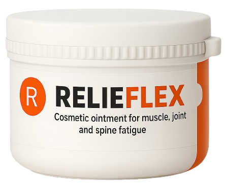
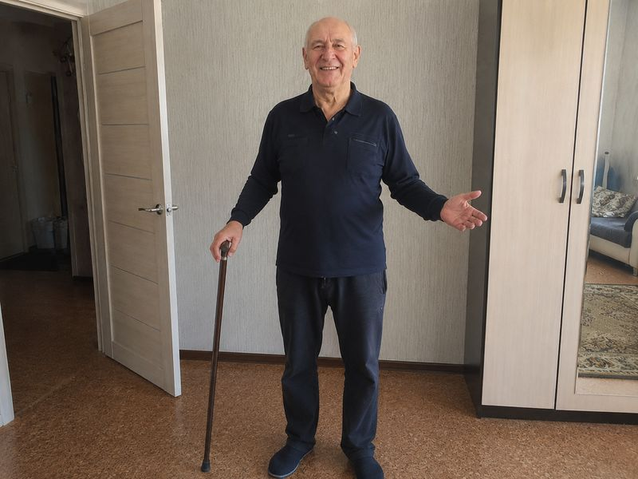
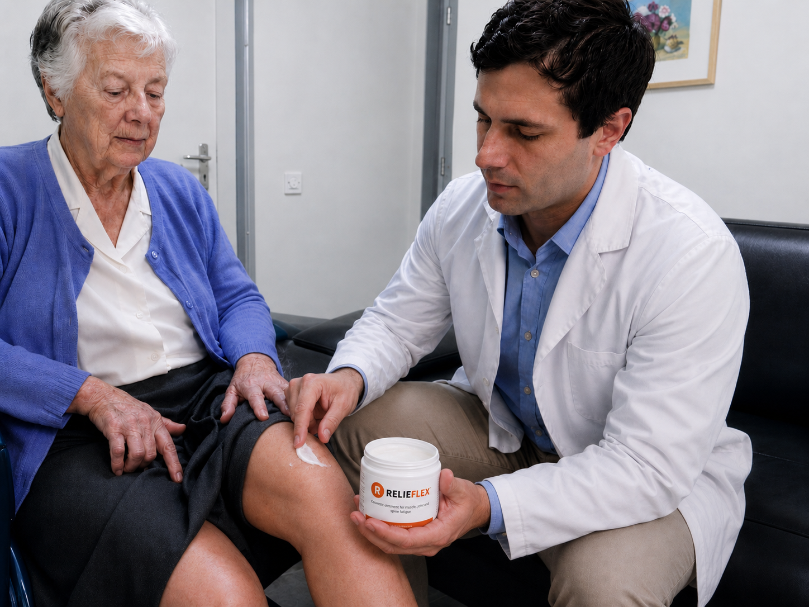
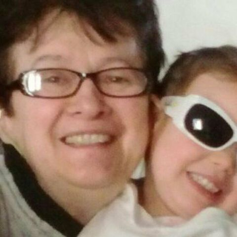

«KIEDY NIE MOŻESZ JUŻ CHODZIĆ, RODZINA O TOBIE ZAPOMINA.»MŁODY LEKARZ, KTÓRY JEŹDZI PO DOMACH OPIEKI I PRZYWRACA PORZUCONYM SENIOROM TO, CZEGO
NIKT INNY NIE MOŻE: STAWY I GODNOŚĆ. JEGO METODA ZSZOKOWAŁA CAŁE ŚRODOWISKO MEDYCZNE.
Opublikowano:
, 09:36
Jak zaledwie 30-letni lekarz, dr Marek Kowalski, zrezygnował z kariery w prywatnej klinice w Warszawie, by pomagać
zapomnianym emerytom w domach opieki — seniorom porzuconym przez rodziny właśnie dlatego, że nie mogli już
chodzić, nie mogli stać, nie mogli nic zrobić sami. I jak metoda, którą opracował wspólnie z centrum badawczym,
przywróciła im sprawność ruchową — bez operacji i bez tabletek na całe życie.
Przyjechaliśmy do Radomia we wtorkowy poranek. Droga do domu opieki prowadziła wąską ulicą, wśród domów ze starymi
furtkami i szczekającymi psami. «Szukacie młodego doktora?» — zapytała kobieta z miejscowego baru. «Przyjeżdża co
czwartek. Seniorzy czekają na niego przy bramie. Niektórzy płaczą, kiedy go widzą.»
W ten sposób po raz pierwszy usłyszeliśmy o dr. Marku Kowalskim — 30-letnim lekarzu, który porzucił posadę w
prywatnej klinice w Warszawie, aby robić to, czego żaden inny lekarz nie chciał: jeździć po domach opieki w całej
Polsce i leczyć emerytów, których rodziny porzuciły.
Powód porzucenia? Prawie zawsze ten sam: seniorzy nie mogli już chodzić. Kolana odmówiły posłuszeństwa.
Plecy się skrzywiły. Ręce trzęsły się tak bardzo, że nie mogli utrzymać łyżki. I w tym momencie — dokładnie wtedy,
kiedy najbardziej potrzebowali pomocy — rodziny uznały, że to za dużo. Za trudno. Za drogo. I zabrały ich do domu
opieki.
«Mój syn powiedział: "Mamo, nie daję rady podnosić cię z krzesła za każdym razem. Nie dam rady." Następnego dnia
zawiózł mnie do domu opieki. Nie odwiedził mnie od 3 lat.»
— Pani Elżbieta, 79 lat, dom opieki w Radomiu
«Kiedy moje kolana całkowicie się zablokowały, żona powiedziała, że nie może żyć z inwalidą. Odeszła. Dzieci
wzięły jej stronę. Przywieźli mnie tutaj i zniknęli.»
— Pan Paweł, 73 lata, dom opieki w woj. podlaskim
«Zobaczyłem, jak wygląda porzucenie. I postanowiłem, że nie mogę bezczynnie patrzeć»
Wywiad ekskluzywny z dr. Markiem Kowalskim — lekarzem, który zrezygnował z pensji 8 500 zł miesięcznie, by
pomagać tym, którzy nie mają już nikogo
Dr Marek Kowalski: «Pierwszy raz wszedłem do domu opieki jako wolontariusz, miałem 28 lat. I nie byłem
przygotowany na to, co zobaczyłem. 76-letnia kobieta, pani Róża, siedziała na skraju łóżka z opuchniętymi nogami
i kolanami, które się już nie zginały. Od 4 miesięcy nie wychodziła z pokoju. Złapała mnie za rękę i
powiedziała:
«Panie doktorze, córka przywiozła mnie tutaj, kiedy nie mogłam już schodzić po schodach. Powiedziała, że nie
może się mną dłużej zajmować. To było dwa lata temu. Od tego czasu nie przyjechała.»
W TYM MOMENCIE ZROZUMIAŁEM, ŻE TO SĄ LUDZIE, KTÓRZY NAJBARDZIEJ MNIE POTRZEBUJĄ —
CI, O KTÓRYCH CAŁY ŚWIAT ZAPOMNIAŁ WŁAŚNIE DLATEGO, ŻE NIE MOGĄ JUŻ CHODZIĆ.»
Dr Kowalski opowiada spokojnie, ale z intensywnością, której nie można zignorować. Od dwóch lat jeździ po domach
opieki w całej Polsce — od Warszawy po Kraków, od Gdańska po Wrocław. I wszędzie znajduje ten sam druzgocący
obraz: seniorów ze zniszczonymi stawami, którzy nie otrzymują żadnego realnego leczenia, tylko tabletki
przeciwzapalne, które niszczą im żołądek i nerki.
«Większość tych ludzi trafiła tutaj z powodu stawów. Kolana odmówiły posłuszeństwa. Plecy się zablokowały. Biodro
się zużyło. I w momencie, kiedy nie mogli już chodzić samodzielnie, rodziny uznały, że są ciężarem. To jest słowo,
które słyszę najczęściej w domach opieki: „ciężar". Opisują własnych rodziców jako ciężar.»
«Nie przywieźli mnie tutaj, bo mnie nie kochali. Przywieźli mnie tutaj, bo budziłem się o 3 w nocy krzycząc z bólu
kolana i nikt nie mógł spać. Synowa powiedziała, że albo ja się wyprowadzam, albo ona. Syn wybrał ją.»
— Pan Jan, 71 lat, dom opieki w woj. śląskim
«Tabletki na stawy niczego nie rozwiązują — tylko maskują zniszczenie»
Dr Kowalski wyjaśnia, dlaczego konwencjonalne terapie w domach opieki i aptekach zawodzą
Dr Marek Kowalski:
— Mówię szczerze: to, co widziałem w tych domach opieki, mną wstrząsnęło. Osobom od 55 do 80 lat podaje się od
lat te same leki przeciwzapalne — tabletki, które maskują ból na kilka godzin, nie lecząc przyczyny. Ich chrząstka
nadal się niszczy. Płyn stawowy zanika. Stawy ścierają się kość o kość. A chemia tabletek niszczy im żołądek,
wątrobę i nerki każdego dnia.
To błędne koło: ból → tabletki → ból wraca silniejszy → silniejsze tabletki → żołądek odmawia → dochodzą tabletki
na żołądek → nerki odmawiają. I nikt nie mówi im prawdy: że istnieje sposób na regenerację stawu od wewnątrz, a
nie tylko na znieczulenie bólu.
Kolana pani Marii, 74 lata, dom opieki w woj. małopolskim. Artroza 3. stopnia, chrząstka prawie całkowicie
zniszczona. Od 5 miesięcy nie wychodzi z pokoju. Na szafce nocnej — 6 rodzajów tabletek, które niczego nie
zmieniły.
Ból kolana, pleców lub biodra po 45. roku życia to nie „normalność dla tego wieku" — to sygnał, że chrząstka
stawowa ulega zniszczeniu, a płyn stawowy zanika.
Tabletki przeciwzapalne blokują jedynie sygnał bólowy, podczas gdy zniszczenie postępuje w ciszy. Bez realnej
regeneracji chrząstki staw zużywa się całkowicie — a wtedy jedyną opcją pozostaje wózek inwalidzki lub
operacja endoprotezy.
Dr Marek Kowalski:
— Proszę, zrozumcie powagę sytuacji. U większości tych seniorów chrząstka kolana, kręgosłupa lub biodra jest
zniszczona w 70-90%. Chodzą — jeśli jeszcze chodzą — kość o kość. Każdy krok to męczarnia. KONWENCJONALNE
TABLETKI NIE MOGĄ ODBUDOWAĆ CHRZĄSTKI — MASKUJĄ JEDYNIE BÓL, AŻ WSZYSTKO SIĘ ZAŁAMIE!
A to, co rozdziera mi duszę: ci ludzie nie mają nikogo. Rodzina porzuciła ich dokładnie w momencie, kiedy stawy
odmówiły posłuszeństwa. Są sami, w łóżku, w małym pokoju i czekają. Niektórzy nie wiedzą już, na co czekają.
«Wychowałam troje dzieci. Przez 40 lat pracowałam na roli. A kiedy moje kolana odmówiły i nie mogłam sama iść do
łazienki — zabrali mnie do domu opieki. Jakbym dla nich już nie istniała. Jakbym już umarła.»
— Pani Jadwiga, 82 lata, dom opieki w woj. lubelskim
«Przez 35 lat byłem brygadzistą w fabryce. Plecy odmówiły w wieku 62 lat. Przepuklina dysku, rwa kulszowa, nie
mogłem stać. Syn powiedział, że nie może siedzieć w domu i się mną opiekować. Ma swoją pracę, swoją rodzinę.
Rozumiem. Ale boli bardziej niż plecy.»
— Pan Józef, 68 lat, dom opieki w woj. łódzkim
Po lewej: zdrowy staw z nienaruszonym chrząstką i wystarczającą ilością płynu stawowego. Po prawej:
zniszczony staw — chrząstka zużyta, przewlekły stan zapalny, kość ociera o kość. To rzeczywistość ponad 80%
seniorów w domach opieki. Tabletki przeciwzapalne nie odbudowują chrząstki.
Ważne: w 2/3 przypadków, nawet przy codziennym przyjmowaniu tabletek przeciwbólowych, stawy nadal się pogarszają,
ponieważ realna przyczyna — zniszczenie chrząstki i zanik płynu stawowego — pozostaje nierozwiązana.
Po latach stosowania leków przeciwzapalnych wielu pacjentów traci nie tylko sprawność ruchową, ale także żołądek,
wątrobę i nerki. Wrzody, niewydolność wątroby, obrzęk nerek — to cena, jaką płacą ci, którym nikt nigdy nie
zaproponował realnej alternatywy.
Historie, które zmieniły moje życie — i które zmienią sposób, w jaki patrzysz na starość
Dr Marek Kowalski:
— Pozwólcie, że opowiem wam, co widzę co tydzień. Nie liczby. Nie statystyki. Ludzi. Ludzi z imionami, z
historiami, z dziećmi, które już nie przyjeżdżają.
Pani Halina, 77 lat. Reumatoidalne zapalenie stawów obu dłoni — nie jest w stanie trzymać filiżanki ani
samodzielnie się ubrać. Córka zawiozła ją do domu opieki 2 lata temu: «Nie mogę ubierać cię każdego ranka, mam
też swoje życie.»
«Nie jestem w stanie nawet się uczesać. Ani nalać sobie wody. Moje ręce nie słuchają. Rano patrzę na nie i nie
poznaję — opuchnięte, skrzywione, jakby nie moje. Synowa powiedziała mi kiedyś: "Jak mam ci zostawić wnuki, skoro
nie jesteś w stanie utrzymać łyżki?" Miała rację. Ale te słowa zabiły mnie w środku.»
— Pani Halina, 77 lat
Pan Ryszard, 75 lat. Przepuklina dysku L4-L5, obustronna koksartroza. Od 8 miesięcy nie staje na nogi.
«Powiedzieli, że jestem za stary na operację. Powiedzieli, żebym się pogodził.»
«Byłem traktorzystą. Zaorałem tysiące hektarów. Teraz nie jestem w stanie sam odwrócić się w łóżku. Plecy się
zablokowały, biodro się zrosło. Moje dzieci pracują w Niemczech. Wysyłają pieniądze na dom opieki i tyle. Nie
potępiam ich. Ale w nocy, kiedy boli i nikt nie przychodzi… zastanawiam się, czy tak wygląda koniec.»
— Pan Ryszard, 75 lat
Oto objawy, które spotykam najczęściej w domach opieki — a które miliony Polaków ignorują:
Silny ból kolana przy wchodzeniu/schodzeniu po schodach — lub przy każdym ruchu;
Sztywność poranna — ciało „drewniane", niezdolne do ruchu przez 30-60 minut po przebudzeniu;
Przewlekły ból pleców — nie mogą się schylić, nie mogą wstać z łóżka;
Obrzęk kolan, kostek lub palców;
Trzeszczenie i strzykanie w stawach przy każdym ruchu;
Ból biodra promieniujący do uda — nie są w stanie przejść więcej niż 50 metrów;
Zdeformowane, guzowate palce dłoni — nie mogą chwycić przedmiotów;
Drętwienie nóg lub rąk — objaw przepukliny lub uciśniętego nerwu;
Uczucie „dźgnięcia nożem" w odcinku lędźwiowym przy wstawaniu;
Nocny ból, który nie pozwala spać — budzą się 4-5 razy w nocy;
Każdy z tych objawów to sygnał alarmowy. A po 45-50. roku życia ich ignorowanie prowadzi do jednego wyniku:
CAŁKOWITA UTRATA RUCHOMOŚCI, WÓZEK INWALIDZKI, PEŁNA ZALEŻNOŚĆ OD INNYCH — A W WIELU
PRZYPADKACH DOM OPIEKI.
Każdy dzień spędzony z nieleczonymi stawami przybliża do trwałej utraty sprawności ruchowej!
Tysiące emerytów w domach opieki trafiło tam właśnie dlatego, że zignorowali ból — albo brali tylko tabletki,
które nie leczyły przyczyny.
Działajcie teraz — dla siebie lub dla swoich bliskich — zanim będzie za późno!
«Postanowiłem, że musi istnieć sposób na regenerację stawów — nie tylko na znieczulenie bólu»
Jak 30-letni lekarz przekonał centrum badawcze do opracowania czegoś, czego przemysł farmaceutyczny
odmawia
Dr Marek Kowalski:
— Po roku wizyt w domach opieki uświadomiłem sobie bolesną prawdę: tabletkami przeciwzapalnymi nikogo nie jestem w
stanie uratować. Te leki gaszą jedynie sygnał alarmowy organizmu, podczas gdy staw nadal się niszczy.
Potrzebowałem czegoś zupełnie innego: metody, która regeneruje chrząstkę od wewnątrz, przywraca płyn stawowy i
zatrzymuje stan zapalny na poziomie komórkowym.
Skontaktowałem się z centrum badawczym, z którym współpracowałem podczas studiów. Przedstawiłem im przypadki,
zdjęcia, wyniki badań moich pacjentów z domów opieki. Zabrałem badaczy ze sobą do domów opieki — żeby na własne
oczy zobaczyli, co się dzieje. Byli w szoku.
Pracowaliśmy wspólnie ponad 10 miesięcy. Przetestowaliśmy ponad 180 kombinacji. I w końcu znaleźliśmy dokładną
formułę — maść, która po nałożeniu na dotknięty staw przenika na poziom komórkowy i aktywuje naturalną
regenerację chrząstki. Nie tabletka, która przechodzi przez żołądek i niszczy wątrobę. Maść, która działa
dokładnie tam, gdzie trzeba.
Formuła maści opracowanego przez dr. Kowalskiego zawiera następujące substancje czynne:
Kamfora i mentol
Naturalny kompleks przeciwbólowy z efektem termicznym
Te składniki są trudne do uzyskania w wymaganym stężeniu. Ich połączenie w odpowiednich proporcjach wymaga
specjalnej technologii — jeśli proporcje są błędne nawet o 0,1%, maść nie przenika wystarczająco głęboko i nie
aktywuje regeneracji chrząstki.
Tak powstał RelieFlex — jedyna maść zawierająca wszystkie te składniki w idealnych proporcjach do pełnej
regeneracji stawów
Dr Marek Kowalski:
— Wspólnie z centrum badawczym udało nam się wyprodukować ten produkt: maść do stosowania zewnętrznego, który
nakłada się bezpośrednio na dotknięty staw — kolano, plecy, biodro, dłonie, szyję. Nazywa się RelieFlex.
Stosuje się go dwa razy dziennie, rano i wieczorem, delikatnie masując przez 2-3 minuty. Substancje czynne wnikają
bezpośrednio do stawu, omijając żołądek i wątrobę — co eliminuje wszystkie skutki uboczne tabletek.

Sekret tkwi w «Technologii Głębokiej Penetracji Transdermalnej», którą opracowaliśmy z zespołem laboratoryjnym. Ta
metoda pozwala substancjom czynnym dotrzeć bezpośrednio do torebki stawowej — tam, gdzie chrząstka ulega
zniszczeniu — z 5-krotnie wyższą skutecznością niż jakikolwiek powszechnie dostępny produkt na rynku.
«RelieFlex» nie ma konkurencji. Każdy składnik — w dokładnym stężeniu — aktywuje regenerację chrząstki,
przywrócenie płynu stawowego i zatrzymanie stanu zapalnego. To jedyna maść, która działa na poziomie komórkowym,
bezpośrednio na dotkniętą strefę — kolano, plecy, biodro, dłonie, szyję — nie przechodząc przez żołądek. A co
najważniejsze: działa nawet w wieku 70, 80, 85 lat. Po raz pierwszy przetestowałem go na moich pacjentach w domach
opieki — na ludziach, których nikt inny już nie leczył.
Dr Marek Kowalski:
— Pierwszymi pacjentami byli porzuceni seniorzy z domów opieki. Ludzie, których rodziny porzuciły. Nałożyłem
maścią opuchnięte kolana, plecy, biodra. I czekałem. Trzeciego dnia — pani Jadwiga, która od 4 miesięcy nie
wstawała z łóżka, zrobiła pierwsze kroki sama. Oboje płakaliśmy.
4 mechanizmy, dzięki którym RelieFlex regeneruje stawy i przywraca sprawność ruchową — w każdym wieku
4 główne efekty maści «RelieFlex»:
Eliminacja bólu i stanu zapalnego:
Już w ciągu 15-30 minut od aplikacji kompleks bosweliowy, arnikowy i kamforowy eliminuje ból i
redukuje stan zapalny. Nie poprzez blokowanie sygnału nerwowego (jak robią tabletki) — ale poprzez
zatrzymanie procesu zapalnego u źródła.
Regeneracja chrząstki stawowej:
Glukozamina, chondroityna i kolagen typu II wnikają do torebki stawowej i aktywują komórki chrząstki
(chondrocyty), stymulując produkcję nowej tkanki chrzęstnej. Proces ten rozpoczyna się po 3-5 dniach
regularnego stosowania.
Przywrócenie płynu stawowego:
Kwas hialuronowy o niskiej masie cząsteczkowej wnika transdermalnie i przywraca płyn stawowy —
naturalny „smar" stawu. Dzięki temu kości nie ocierają się już o siebie, a ruch staje się płynny i
bezbolesny.
Długoterminowa ochrona i profilaktyka:
MSM i kompleks mineralny wzmacniają więzadła i ścięgna wokół stawu, zapobiegając dalszemu pogarszaniu
się stanu. Po 30-60 dniach stosowania staw uzyskuje stabilną ochronę, która utrzymuje się
miesiącami.
«RelieFlex przetestowałem najpierw na moich pacjentach z domów opieki — wyniki przerosły wszystko, co
widziałem w ciągu 6 lat praktyki medycznej»
Badanie na 2340 osobach w wieku od 45 do 86 lat
Dr Marek Kowalski:
— Pierwszymi pacjentami byli porzuceni seniorzy z domów opieki. Ci, których nikt już nie leczył. Wyniki były tak
imponujące, że centrum badawcze rozszerzyło testy na grupę ponad 2300 osób z całej Polski — uwzględniając
wszystkie rodzaje problemów stawowych: kolana, plecy, biodra, dłonie, szyja.
Widziałem 80-letnich ludzi, którzy nie mogli chodzić — a po 6 tygodniach samodzielnie wychodzili na podwórko domu
opieki. Pielęgniarki płakały. Ja płakałem razem z nimi.
Wyniki badań «RelieFlex» — grupa kontrolna: 2340 osób, 45-86 lat
Całkowita eliminacja bólu kolana
96,2%
Eliminacja bólu pleców i sztywności porannej
94,7%
Artroza 1-2 stopnia (pełne przywrócenie ruchomości)
98,1%
Artroza 3 stopnia (znaczna poprawa)
87,3%
Koksartroza (ból biodra)
91,5%
Przepuklina dysku (redukcja bólu i drętwienia)
89,4%
Reumatoidalne zapalenie stawów (palce dłoni)
93,8%
Pełne przywrócenie ruchomości stawu
95,6%
Eliminacja obrzęku i nocnych skurczów
97,0%
Zdolność samodzielnego chodzenia
94,3%
Przypadki, które złamały mi serce — i dały największą nadzieję
Pani Wiktoria, 84 lata. Porzucona w domu opieki, kiedy kolana odmówiły posłuszeństwa. Po 2 miesiącach stosowania
RelieFlex — wyszła sama do ogrodu, pierwszy raz od 3 lat.
Pani Wiktoria Nowakowska była pierwszą pacjentką dr. Kowalskiego w domu opieki w woj. podkarpackim. W wieku 84
lat, z artrozą 3. stopnia w obu kolanach i koksartrozą lewego biodra, nie mogła chodzić od 14 miesięcy. Syn
zawiózł ją do domu opieki, kiedy „nie był w stanie zanieść jej do łazienki". Nie odwiedził jej od dwóch lat.
«Nie wierzyłam, że kiedykolwiek jeszcze będę mogła chodzić. Moje kolana były tak opuchnięte, że nie mogłam ich
zgiąć. Woziły mnie po pokoju na wózku inwalidzkim. Rano budziłam się i przez godzinę nie mogłam poruszyć nawet
palcem. Jakby moje ciało umarło, ale ja jeszcze żyła.
Syn zawiózł mnie do domu opieki, bo nie był w stanie podnieść mnie z łóżka. Powiedział: "Mamo, będę cię
odwiedzał w każdą niedzielę." Nie przyjechał od dwóch lat. Nie potępiam go — ma swoje życie. Ale w nocy, kiedy
ból mnie budzi i nikogo przy mnie nie ma… jest ciężko.
A potem przyjechał dr Kowalski. Był pierwszą osobą, która dotknęła moich kolan bez obrzydzenia na twarzy.
Wytłumaczył mi, co dzieje się ze stawami. I nałożył maść. Po tygodniu mogłam zgiąć lewe kolano. Po miesiącu
wstałam z łóżka sama. Po dwóch miesiącach — wyszłam do ogrodu. Nie wychodziłam od 3 lat.
Pielęgniarka płakała, kiedy mnie zobaczyła. Ja płakałam bardziej. Nie dlatego, że chodziłam. Ale dlatego, że
ktoś — młody doktor, którego nigdy wcześniej nie znałam — dał mi więcej niż mój własny syn.
Wiktoria Nowakowska, 84 lata, dom opieki w woj. podkarpackim
Kolejny przypadek: pan Antoni, 58 lat, murarz przez całe życie, ze zniszczonymi plecami z powodu przepukliny
dysku. Żona odeszła, kiedy nie mógł już pracować.
«Przez 30 lat byłem murarzem. Plecy odmówiły posłuszeństwa w wieku 54 lat — dwie przepukliny dysku i rwa
kulszowa. Nie mogłem ani stać, ani leżeć. Wszystko bolało. Żona odeszła — powiedziała, że nie może opiekować się
inwalidą. Nie potępiam jej.
Moja siostra usłyszała o dr. Kowalskim od sąsiadki. Przysłała mi maść RelieFlex. Zacząłem nakładać
plecy, rano i wieczorem. Trzeciego dnia poczułem pierwszą ulgę. Po 3 tygodniach — mogłem znów iść do sklepu.
Po 2 miesiącach — wróciłem do pracy na pół etatu.
Czasem budzę się rano, wstaję z łóżka bez bólu i zatrzymuję się na sekundę. Stoję i nie mogę uwierzyć, że to
prawda. Że już nie boli. Gdyby nie dr Kowalski, może ja też byłbym teraz w domu opieki.»
«RelieFlex nie tylko leczy ból — regeneruje cały staw od wewnątrz»
Nie tylko mieszkańcy domów opieki mogą z tego skorzystać. Każdy powyżej 45. roku życia, kto czuje pierwsze
sygnały, może zapobiec katastrofie.
Dr Marek Kowalski:
— Minimalny czas stosowania to 30 dni, ale w ciężkich przypadkach artrozy lub przepuklin może być potrzebne 2-3
miesiące. Jednak w każdym przypadku — bez wyjątku — obserwuje się zmniejszenie bólu, regenerację chrząstki i
przywrócenie ruchomości.
RelieFlex działa od pierwszej aplikacji: ból maleje, stan zapalny się zmniejsza, ruch staje się łatwiejszy.
Ale prawdziwa magia dzieje się z czasem: chrząstka się regeneruje, płyn stawowy wraca, staw „odmładza się" od
wewnątrz.
Widziałem 80-letnich ludzi chodzących ponownie. Widziałem dłonie, które nie mogły trzymać filiżanki, podnoszące
łyżkę do ust. Widziałem skrzywione plecy prostujące się. I w każdym przypadku — widziałem łzy radości.
Dzięki metodzie dr. Kowalskiego ponad 12 000 osób w Polsce odzyskało sprawność stawów. Oto niektóre przypadki:
Mężczyzna, 65 lat. Artroza 3. stopnia w obu kolanach — nie mógł wchodzić po schodach. RelieFlex w
60 dni: pełna sprawność ruchowa, bez bólu.Kobieta, 58 lat. Przewlekły ból pleców i przepuklina L5-S1. RelieFlex w 45 dni: ból
wyeliminowany, znów może wykonywać prace domowe.Kobieta, 72 lata. Ciężkie reumatoidalne zapalenie stawów palców — nie mogła trzymać filiżanki. Ostelix
Hondro w 2 miesiące: palce ruchome, obrzęk zniknął.

Mężczyzna, 70 lat. Zaawansowana koksartroza — chodził tylko z chodzikiem. RelieFlex w 2,5
miesiąca: chodzi sam, bez bólu.
Dr Marek Kowalski:
— Te przypadki to żywy dowód, że stawy mogą się regenerować — nawet gdy diagnoza brzmiała jak wyrok. Bez operacji.
Bez tabletek niszczących żołądek. A to, co daje mi największą radość: wielu z tych ludzi to mieszkańcy domów
opieki — ci, o których świat zapomniał. Ale ja o nich nie zapomniałem. I RelieFlex też o nich nie
zapomina.
Dlaczego RelieFlex nie jest dostępny w aptece? I jak można go zdobyć?
Dr Marek Kowalski:
Niestety, produkcja RelieFlex to skomplikowany i kosztowny proces. Składniki są rzadkie — kwas hialuronowy o
niskiej masie cząsteczkowej, oczyszczony kolagen typu II, skoncentrowany ekstrakt z Boswellia — i trudne do
uzyskania w wymaganych ilościach. Nie jesteśmy w stanie zaspokoić całego popytu.
Potrzebne będą co najmniej 2-3 lata, zanim RelieFlex trafi do aptek. Do tego czasu produkt jest
dystrybuowany wyłącznie online, w ramach programów wsparcia, dwa razy w roku. Ale
rabaty mogą sięgać nawet 50%
— co jest kluczowe dla emerytów.
Proszę: NIE PRZEGAPCIE PROGRAMU WSPARCIA. Nie tylko dla siebie — ale też dla rodziców, dziadków, bliskich, którzy
może cierpią w milczeniu. Lub dla kogoś, kto jest już w domu opieki, sam, i nikt mu niczego nie wysyła. Bądźcie
osobą, która robi różnicę.
Aby złożyć zamówienie, skorzystaj z poniższego formularza.
Ostatnia okazja w tym roku, by zdobyć RelieFlex — dla siebie lub dla bliskiej osoby, która cierpi w milczeniu

Dr Marek Kowalski:
— Zarezerwowałem 20 000 opakowań wyłącznie dla czytelników tego portalu. Każdy obywatel Polski powyżej 40. roku
życia może otrzymać rabat do 50%, ale program kończy się .
Nie czekajcie, aż nie będziecie mogli wejść po schodach. Aż kolana całkowicie odmówią. Aż plecy się zablokują. A
przede wszystkim — nie czekajcie, aż staniecie się „ciężarem" w oczach bliskich. RelieFlex ma efekt
kumulacyjny i wystarczy stosować raz w roku jako profilaktykę.
Wpisz swoje imię i numer telefonu. Konsultant skontaktuje się z Tobą, dobierze odpowiedni program i zorganizuje
dostawę w ciągu 2-3 dni, kurierem lub pocztą, bezpośrednio pod wskazany adres.
Z nadzieją i szacunkiem — dr Marek Kowalski. Zadbajcie o swoich bliskich. Być może jedyne, czego potrzebują,
to wiedzieć, że o nich nie zapomnieliście.
Aktualizacja: :
Ze względu na ogromne zainteresowanie zapasy mogą się wyczerpać wcześniej niż planowano! Dziś —
— to ostatni dzień programu lub do wyczerpania zapasów.
Uwaga! Nie zamykaj i nie odświeżaj strony, w przeciwnym razie zarezerwowana dla Ciebie paczka RelieFlex
zostanie zaoferowana innej osobie!
Możesz wziąć udział w promocji — Twoje miejsce jest zarezerwowane:
Nr 19 974
Oficjalny formularz zamówienia
№ 19 974 / 20 000
Aby skorzystać z rabatu 50%, wpisz swoje imię i numer telefonu w polach poniżej i naciśnij przycisk
«ZAMAWIAM».
Dostępne:
33 /1000
KOMENTARZE
Anna Wiśniewska
Płakałam czytając ten artykuł. Moja mama ma 76 lat i jest w domu opieki od
2 lat — właśnie dlatego, że kolana odmówiły i nie byliśmy w stanie się nią opiekować. To moja największa
wina. Zamówiłam RelieFlex dla niej. Mam nadzieję, że nie jest za późno. Boże, mam nadzieję, że
zadziała.
Katarzyna Kamińska
RelieFlex otrzymałam w zeszły piątek. Nakładam na kolana rano i
wieczorem. Po 5 dniach — ból ogromnie się zmniejszył, jestem w stanie schodzić po schodach bez trzymania
się poręczy! Historia doktora przekonała mnie do zamówienia. Niezwykły człowiek.
Barbara Zielińska
Mam 69 lat. Plecy dręczyły mnie od 4 lat — przepuklina dysku i rwa
kulszowa. Nie mogłam się schylić, żeby zawiązać buty. Lekarze dawali mi leki przeciwzapalne, które
zniszczyły mi żołądek. Po 3 tygodniach stosowania RelieFlex — ból prawie całkowicie zniknął. Sama
chodzę na targ, robię zakupy, gotuję. Znowu żyję.
Tomasz Lewandowski
Pracuję w biurze 10 godzin dziennie. Plecy i kark całkowicie odmówiły.
Lekarz powiedział: «Albo pan rezygnuje z pracy, albo operacja.» Wybrałem RelieFlex. Po 5 tygodniach —
żadnego śladu bólu. I mój ogromny szacunek dla dr. Kowalskiego — w świecie, gdzie wszyscy chcą pieniędzy,
on jeździ do zapomnianych starszych ludzi.
Krzysztof Wójcik
Zamówiłem 3 opakowania — dla siebie (kolana), dla żony (dłonie, artretyzm)
i dla teścia w domu opieki. Nie możemy go często odwiedzać, ale przynajmniej wysyłamy to, czego
potrzebuje. Mam nadzieję, że jemu też pomoże. Dziękuję za artykuł.
Małgorzata Szymańska
Myślę o zamówieniu dla ojca. Jest w domu opieki od 3 lat — kolana nie
działają. Zrezygnował z życia, prawie się nie odzywa. Myślicie, że RelieFlex może jeszcze pomóc w
wieku 78 lat?
Ewa Jankowska
Małgorzato, moja mama ma 82 lata! Ciężka artroza obu kolan, nie mogła
wstać z łóżka. Stosowała RelieFlex przez 2 miesiące — teraz sama wychodzi na podwórko. Nie
przesadzam. A co najpiękniejsze: kiedy ją odwiedziłam, czekała na mnie stojąc przy bramie. Obie
płakałyśmy. Zamawiaj bez wahania, twój ojciec zasługuje na szansę.
Stanisław Mazur
Małgorzato, zamawiaj, nie zastanawiaj się! Ja w wieku 78 lat byłem o
krok od wózka inwalidzkiego — koksartroza. RelieFlex w 2 miesiące postawił mnie na nogi. Dosłownie.
Twój ojciec potrzebuje tego bardziej, niż myślisz.

Dorota Krawczyk
Tydzień stosowania na kolana i lędźwie. Rano nie jestem już „drewniana".
Mogę się schylić, wstać bez jęku. Zamówiłam też dla mojej 73-letniej sąsiadki, która mieszka sama i trzyma
się ścian, żeby chodzić po mieszkaniu.
Teresa Pawlak
W wieku 68 lat myślałam, że nigdy więcej nie będę mogła pracować w
ogrodzie. Kolana i plecy mnie sparaliżowały. RelieFlex zmienił wszystko — po 4 tygodniach przekopałam
pierwszą grządkę w tym roku. A historia dr. Kowalskiego głęboko mnie poruszyła. Na świecie jeszcze są
ludzie z sercem.
Henryk Dąbrowski
Mam 82 lata. W zeszłym roku nie mogłem sam iść do łazienki. Dzieci mówiły
o domu opieki. Spróbowałem RelieFlex — bez większej nadziei. A działa! Chodzę sam, ubieram się sam,
sam wychodzę do furtki. Moje dzieci nie mówią już o domu opieki. To moja największa radość w życiu.
Zbigniew Grabowski
Moja żona nie mogła zejść po schodach. Trzymała się ściany i płakała z
bólu. Myślałem, że ją stracę — nie z powodu choroby, ale z rozpaczy. Zamówiłem RelieFlex z rabatem.
Po 4 tygodniach — wczoraj sama zeszła na targ i wróciła z kwiatami. Z kwiatami! Dziękuję z głębi serca.
Agnieszka Pawlak
Zamówiłam 4 opakowania — dla mamy (dom opieki, kolana), dla taty (w domu,
plecy) i 2 dla siebie (dłonie, artretyzm palców, nie mogłam pisać). Historie z artykułu mnie zniszczyły.
Powinnam była to zrobić dużo wcześniej. Nie mam już wymówek.
Jolanta Michalska
RelieFlex dotarł — kurier dostarczył w 2 dni! Już nałożyłam na kolana
mamy w domu opieki. Mam wielką nadzieję. Wyślę ten artykuł też personelowi — może skontaktują się z dr.
Kowalskim.
Piotr Zawadzki
Szukałem RelieFlex w aptece — nie ma. Powiedzieli mi, żebym zamówił z
tej strony. Mam nadzieję, że jest jeszcze dostępny. Mój dziadek pilnie go potrzebuje — ma 81 lat i w ogóle
nie może chodzić.
🛡️ Certyfikowana jakość
🚚 Dostawa w 2–3 dni
⚕️ Bez recepty
🔒 Bezpieczne zamówienie
PRIVACY POLICY
We, health-ko.online (hereinafter referred to as ‘Site’,
‘We’, or ‘Us’) respect the privacy concerns of the users
of this Site, and created this privacy statement to
explain what information we gather from your visit to our
Site, and how such information may be used.
Use of Information
As a general policy, no personally identifiable
information, such as your name or address, is
automatically collected from Site visits. However, certain
non-personal information is recorded by the standard
operation of internet servers. Information such as the
type of browser being used, its operating system, and your
IP address is gathered in order to enhance your online
experience. For example, it may be used to tailor content
and advertising to your interests.
In special cases, We may disclose user information when
there is reason to believe that disclosing this
information is necessary to identify, contact or bring
legal action against someone who may be causing injury to,
or interference (either intentionally or unintentionally)
with, Site’s rights or property, other Site users, or
anyone else that could be harmed by such activities.
Security
Security for all personally identifiable information is
extremely important to us. Unfortunately, no data
transmission over the Internet can be guaranteed to be
100% secure. While we strive to protect your personal
information, we cannot ensure or warrant the security of
any information you transmit to us or from our online
forms, and you do so at your own risk. Once we receive
your transmission, we make our best effort to ensure its
security on our systems.
Use of Cookies
Cookies are pieces of information that a website transfers
to an individual’s computer hard drive for record-keeping
purposes. Cookies are used to track visits to our Sites
and to personalize the Sites for new and current
subscribers. Most browsers are initially set up to accept
cookies; however, you can reset your browser to refuse all
cookies or indicate when a cookie is being sent. (Note:
you will need to consult the help area of your browser
application for instructions.) If you choose to disable
your cookies setting or refuse to accept a cookie, some
parts of our website may not function properly.
Use of IP Addresses
An IP address is a number that’s automatically assigned to
your computer by your Internet provider whenever you surf
the Web. When you request pages from the Site, our servers
log your IP address. We collect IP addresses for the
purposes of system administration, to report aggregate
information to our advertisers, and to audit the use of
our Site. We may use your IP addresses in cooperation with
your Internet provider to identify you if we deem it
necessary to enforce compliance with our Terms of Use or
to protect our service, Sites, customers, or others.
Links to Other Sites
The Site is not responsible for the content or practices
of third party websites that may be linked to our Sites.
Our Sites may link to websites operated by other
companies; we are not responsible for the privacy
practices of such websites. Visitors to these websites
should refer to each website’s respective privacy policies
and practices.
Contact Us
If you have any questions about this privacy statement,
the practices of our Sites, or your dealings with our
Sites, you can email us. Information provided by you via
general email inquiries to us such as your email address
is used only to respond to your inquiries in the ordinary
course of business and is never shared with third parties.
Your Acceptance of These Terms
By using this Site, you signify your acceptance of the
Privacy Policy. If you do not agree to this policy, please
do not use our Sites. We reserve the right to modify,
alter or otherwise update this policy at any time. We
encourage visitors to review this policy from time to
time. Your continued use of the Site following the posting
of changes to these terms indicates your acceptance of the
changes. In the course of serving advertisements to our
sites, our third-party advertisers may place or recognize
a unique “cookie” on your browser.
We use third-party advertising companies to serve ads when
you visit our Site. These companies may use aggregated
information (not including your name, address, email
address or telephone number) about your visits to this
Site and other websites in order to provide advertisements
about goods and services of interest to you. If you would
like more information about this practice and to know your
choices about not having this information used by these
companies, visit the Network Advertising Initiative or
Self-Regulatory Program for Online Behavioral Advertising.
Google AdSense and other third party vendors use cookies
to serve ads on our websites. Users may opt out of the use
of the DART cookie by visiting the Google and content
network privacy policy.
Terms and Conditions
Acceptance of Terms And Conditions
By using health-ko.online (hereinafter referred to as
‘Site’, ‘We’, or ‘Us’), you signify your acceptance of
these Terms and Conditions. If you do not agree to these
Terms and Conditions, please do not use our Site. We
reserve the right to modify, alter or otherwise update
this policy at any time. We encourage visitors to review
these Terms and Conditions from time to time. Your
continued use of the Site following the posting of changes
to these terms indicates your acceptance of the changes.
1. Your Account
If you create an account on our Site, you are responsible
for maintaining the security of your account, and you are
fully responsible for all activities that occur under the
account and any other actions taken in connection with the
account. You agree to provide and maintain accurate,
current and complete information, including your payment
information and contact information for notices and other
communications from us. You may not use false or
misleading information in connection to your account.
2. Responsibility of Users of the Site, Products, and/or
Services
Your access to, and your use of, the Site, Products,
and/or Services must be lawful and must be in compliance
with these Terms, and any other agreement between you and
us. When accessing or using the Site, Products, and/or
Services, you must behave in a civil and respectful manner
at all times. We specifically prohibit any use of the
Site, Products, and/or Services, and you agree not to use
the Site, for any of the following:
Engaging in conduct that would constitute as a criminal
offense, giving rise to civil liability or otherwise
violating any city, state, national or international law
or regulation that would fail to comply with accepted
internet protocol;
Communicating, transmitting, or posting material that is
copyrighted or otherwise owned by a third party unless
you are the copyright owner or have the permission of
the owner to post it;
Communicating, transmitting, or posting material that
reveals trade secrets, unless you own them or have the
permission of the owner;
Communicating, transmitting, or posting material that
infringes on intellectual property, privacy or publicity
right of another;
Attempting to interfere in any way with the Site, or our
networks or network security, or attempting to use our
Site to gain unauthorized access to any other computer
system;
Accessing data not intended for you, or logging on to a
server or account, which you are not authorized to
access;
In addition, if you operate an account, contribute to an
account, post material to the Site, post links on the
Site, or otherwise make material available by means of the
Site (any such material, "Content"), you are solely
responsible for the content of, and any harm and damages
resulting from that Content, regardless of whether the
Content in question constitutes text, graphics, an audio
file, or computer software. By making Content available,
you represent and warrant that:
the downloading, copying and use of the Content will not
infringe the proprietary rights, including but not
limited to the copyright, patent, trademark or trade
secret rights, of any third party;
you have fully complied with any third party licenses
relating to the Content, and have done all things
necessary to successfully pass through to end users any
required terms;
the Content does not contain or install any viruses,
worms, malware, Trojan horses or other harmful or
destructive content;
the Content is not obscene, libelous, hateful or
racially or ethnically objectionable, and does not
violate the privacy or publicity rights of any third
party.
You are responsible for taking precautions as necessary to
protect yourself and your computer systems from viruses,
worms, and other harmful or destructive content. We will
take reasonable precautions to prevent the transmission of
harmful content from its technology systems to your
technology systems. We expressly disclaim any liability
for any harm or damages resulting from your access or use
of the Site, Products, and/or Services, or access or use
of third-party websites.
We have the right (though not the obligation) to (i)
refuse or remove any Content that, in our reasonable
opinion, violates any our internal policy or is in any way
harmful or objectionable, or (ii) terminates or denies
access to and use of the Site, Products, and/or Services,
to any person for any reason, in our sole discretion.
3. Fees and Payments
By purchasing our Products and/or Services, you agree to
pay fees or annual subscription fees for such Product or
Service. Configurations and prices of the Site, Products,
and/or Services are subject to change at any time, and we
may modify configurations, fees, prices and quotations,
provided that no price changes shall be made applicable to
you during a subscription term, and shall take effect only
after you have agreed upon an extension, upgrade or
renewal of the subscription term. You agree to any such
changes if you do not object in writing within seven (7)
business days of receiving, or an invoice, incorporating
or announcing the fee and/or price changes. All prices are
exclusive of, and you shall pay all taxes, duties, levies
or fees, or other similar charges.
4. Use of Third Party Content and Materials
By operating the Site, we do not represent or imply that
it endorses the material there posted, or that it believes
such material to be accurate, useful or non-harmful. The
Site may contain content that is offensive, indecent, or
otherwise objectionable, as well as content containing
technical inaccuracies, typographical mistakes, and other
errors. The Site may also contain material that violates
the privacy or publicity rights; infringes the
intellectual property and other proprietary rights of
third parties; or the downloading, copying or use of which
is subject to additional terms and conditions, stated or
unstated. We disclaim any responsibility for any harm
and/or damages resulting from the use or downloading of
postings of other parties on the Site.
5. Content Posted on Other Websites
We have not reviewed, and cannot review, all of the
material, including computer software, made available
through the websites and webpages to which our Site links,
and that link to our Site. We do not have any control over
those third-party websites and webpages, and are not
responsible for their contents or their use. By linking to
a third-party website or webpage, we do not represent or
imply that it endorses such website or webpage.
6. Copyright Infringement
We encourage you to respect the intellectual property
rights of others. If you believe that material located on
or linked to by the Site violates your copyright, please
notify Us immediately. We will respond to all such
notices, including as required or appropriate by removing
the infringing material or disabling all links to the
infringing material.
7. Termination
You may terminate your agreement and close your account
with us at any time, effective the last day of your
subscription term, by sending an email. We may terminate
its relationship with you, or may terminate or suspend the
accessibility to the Site, Products, and/or Services at
any time, including the use of any software, (i) if you
breach these Terms; (ii) if We reasonably suspects that
you are using the Site, Products, and/or Services to
breach the law or infringe third party rights; (iii) if
you fail to pay any amounts due to Us; (iv) you violate
any applicable law or regulation. Upon termination of your
account for the above reasons, there will be no refund of
fees and you will be denied access to the Site, Products
and/or the Services, including all of its data. If you
believe that We failed to perform or the Services are
defective, you must notify Us in writing and allow
fourteen (14) days to cure the defect. If We do not cure
the defect within this cure period, you may terminate the
subscription with immediate effect, upon written notice to
us.
8. Changes
The configurations and specifications of the Site,
including and without limitation to all content there
available, the Products, and Services may be amended
and/or updated from time to time, at our sole discretion.
You are bound by any such changes or updates, unless such
changes materially diminish the functionality and value of
the Site, Products and/or Services.
9. A Special Note Regarding Children
The Site is not designed or intended for use by children
under the age of 16, and our Products and Services may not
be purchased by children under the age of 16. We do not
intentionally gather personal information from visitors
who are under the age of 16. If you are under the age of
16, you are not permitted to submit any personal
information to us. If you are under the age of 16, you
should use the Site only with consent of a parent or
guardian.
10. Limitation of Warranties
We and our licensors make no warranties or representations
whatsoever with respect to the Site, Products, and
Services, or any linked site or its content, including the
content, information and materials on it or the accuracy,
completeness, or timeliness of the content, information
and materials. We also do not warrant or represent that
your access to or use of the Site, Products, and/or
Services, or any linked site will be uninterrupted or free
of errors or omissions, that defects will be corrected, or
that the Site, Products, and/or Services, or any linked
site is free of computer viruses or other harmful
components. We assume no responsibility, and shall not be
liable for any damages to, or viruses that may infect,
your computer equipment or other property on account of
your use of the Products or Services, or your access to,
use of, or browsing of the Site, or your downloading or
uploading of any Content from or to the Site. If you are
dissatisfied with the Site, your sole remedy is to
discontinue using the Site. No advice, results or
information, whether oral or written, obtained by you from
Us, or through the Site, shall create any warranty not
expressly made herein. We do not necessarily endorse,
support, sanction, encourage or agree with any content or
any user content, or any opinion, recommendation, content,
link, data or advice expressed or implied therein, and We
expressly disclaim any and all liability in connection
with user content and any other content, materials or
information available on or through the Site, Products,
and/or Services, created or provided by users or other
third parties.
11. Limitation of Liability
Under no circumstances shall any party, its subsidiaries
and affiliates, their respective directors, officers,
employees or agents, and other representatives, be liable
for any indirect, consequential, incidental, special, or
punitive damages, including but not limited to lost
profits and business interruption, whether in contract or
in tort, including negligence, arising in any way from the
use of the Site, Products, Services, and/or the Contents
thereof, or of any hyperlinked website even if such party
is expressly advised of the possibility of such damages.
With the exception of damages related to legally proven or
admitted intellectual property infringement caused by
Products and/or Services as delivered by a party without
any third party content, in no event shall a party’s
liability exceed the total sums received by Us from you
during the six (6) month period immediately prior to the
date the damages first occurred.
12. Your Representations and Warranties
You represent and warrant that your use of the Site,
Products, and/or Services will be in accordance with any
agreement between you and Us, Privacy Policy, these Terms,
and with any applicable laws and regulations, including
and without limitation to any local laws or regulations in
your country, state, city, or other governmental area,
regarding online conduct and acceptable content, and
including all applicable laws regarding the transmission
of technical data exported from the country in which you
reside, and with any other applicable policy or terms and
conditions.
13. Indemnification
Subject to the limitations set forth herein, the Parties
agree to defend, indemnify, and hold each other harmless,
including its subsidiaries and affiliates, their
respective directors, officers, employees or agents, and
other representatives, from and against all claims,
losses, damages, liabilities, and costs (including but not
limited to reasonable attorneys’ fees and court costs),
arising out of, relating to or in connection with (i) a
material violation of these Terms, or any agreement
between the Parties, or (ii) any allegation that any
information or material (including any Content) violates
any rights of any third party. You understand and agree
that, by using the Products and/or Services, you are
solely responsible for any data, including personally
identifiable information, collected or processed via our
Products and/or Services. You will defend, indemnify, and
hold Us harmless, without any limitation, for all damages
in connection to (alleged) violations of any privacy laws
through the use of the Products and/or Services under your
account.
14. Miscellaneous
If any part of these Terms is held invalid or
unenforceable, that part will be construed to reflect the
Parties’ original intent, and the remaining portions will
remain in full force and effect. A waiver by either party
of any term or condition of these Terms or any breach
thereof, in any one instance, will not waive such term or
condition or any subsequent breach thereof. You may only
assign your rights under these Terms to any party that
consents to, and agrees to be bound by, the terms hereof
in writing. We may assign its rights under these Terms at
its sole discretion. These Terms will be binding upon and
will insure to the benefit of the parties, their
successors and permitted assigns. You agree that no joint
venture, partnership, employment, or agency relationship
exists between you and us as a result of the Terms, or
your use of the Site, Products, and/or Services.
Disclaimer
We, health-ko.online (hereinafter referred to as ‘Site’,
‘We’ or ‘Us’) and or licensors make no warranties or
representations whatsoever with respect to the Site,
Products, and Services, or any linked site or its content,
including the content, information and materials on it or
the accuracy, completeness, or timeliness of the content,
information and materials.
We also do not warrant or represent that your access to or
use of the Site, Products, and/or Services, or any linked
site will be uninterrupted or free of errors or omissions,
that defects will be corrected, or that the Site,
Products, and/or Services, or any linked site is free of
computer viruses or other harmful components.
We assume no responsibility, and shall not be liable for
any damages to, or viruses that may infect, your computer
equipment or other property on account of your use of the
Products or Services, or your access to, use of, or
browsing of the Site, or your downloading or uploading of
any Content from or to the Site. If you are dissatisfied
with the Site, your sole remedy is to discontinue using
the Site. No advice, results or information, whether oral
or written, obtained by you from Us, or through the Site,
shall create any warranty not expressly made herein.
We do not necessarily endorse, support, sanction,
encourage or agree with any content or any user content,
or any opinion, recommendation, content, link, data or
advice expressed or implied therein, and We expressly
disclaim any and all liability in connection with user
content and any other content, materials or information
available on or through the Site, Products, and/or
Services, created or provided by users or other third
parties.
Under no circumstances shall any party, its subsidiaries
and affiliates, their respective directors, officers,
employees or agents, and other representatives, be liable
for any indirect, consequential, incidental, special, or
punitive damages, including but not limited to lost
profits and business interruption, whether in contract or
in tort, including negligence, arising in any way from the
use of the Site, Products, Services, and/or the Contents
thereof, or of any hyperlinked website even if such party
is expressly advised of the possibility of such damages.
With the exception of damages related to legally proven or
admitted intellectual property infringement caused by
Products and/or Services as delivered by a party without
any third party constent, in no event shall a party’s
liability exceed the total sums received by Us from you
during the six (6) month period immediately prior to the
date the damages first occurred.


KOMENTARZE
Anna Wiśniewska
Płakałam czytając ten artykuł. Moja mama ma 76 lat i jest w domu opieki od 2 lat — właśnie dlatego, że kolana odmówiły i nie byliśmy w stanie się nią opiekować. To moja największa wina. Zamówiłam RelieFlex dla niej. Mam nadzieję, że nie jest za późno. Boże, mam nadzieję, że zadziała.
Katarzyna Kamińska
RelieFlex otrzymałam w zeszły piątek. Nakładam na kolana rano i wieczorem. Po 5 dniach — ból ogromnie się zmniejszył, jestem w stanie schodzić po schodach bez trzymania się poręczy! Historia doktora przekonała mnie do zamówienia. Niezwykły człowiek.
Barbara Zielińska
Mam 69 lat. Plecy dręczyły mnie od 4 lat — przepuklina dysku i rwa kulszowa. Nie mogłam się schylić, żeby zawiązać buty. Lekarze dawali mi leki przeciwzapalne, które zniszczyły mi żołądek. Po 3 tygodniach stosowania RelieFlex — ból prawie całkowicie zniknął. Sama chodzę na targ, robię zakupy, gotuję. Znowu żyję.
Tomasz Lewandowski
Pracuję w biurze 10 godzin dziennie. Plecy i kark całkowicie odmówiły. Lekarz powiedział: «Albo pan rezygnuje z pracy, albo operacja.» Wybrałem RelieFlex. Po 5 tygodniach — żadnego śladu bólu. I mój ogromny szacunek dla dr. Kowalskiego — w świecie, gdzie wszyscy chcą pieniędzy, on jeździ do zapomnianych starszych ludzi.
Krzysztof Wójcik
Zamówiłem 3 opakowania — dla siebie (kolana), dla żony (dłonie, artretyzm) i dla teścia w domu opieki. Nie możemy go często odwiedzać, ale przynajmniej wysyłamy to, czego potrzebuje. Mam nadzieję, że jemu też pomoże. Dziękuję za artykuł.
Małgorzata Szymańska
Myślę o zamówieniu dla ojca. Jest w domu opieki od 3 lat — kolana nie działają. Zrezygnował z życia, prawie się nie odzywa. Myślicie, że RelieFlex może jeszcze pomóc w wieku 78 lat?
Ewa Jankowska
Małgorzato, moja mama ma 82 lata! Ciężka artroza obu kolan, nie mogła wstać z łóżka. Stosowała RelieFlex przez 2 miesiące — teraz sama wychodzi na podwórko. Nie przesadzam. A co najpiękniejsze: kiedy ją odwiedziłam, czekała na mnie stojąc przy bramie. Obie płakałyśmy. Zamawiaj bez wahania, twój ojciec zasługuje na szansę.
Stanisław Mazur
Małgorzato, zamawiaj, nie zastanawiaj się! Ja w wieku 78 lat byłem o krok od wózka inwalidzkiego — koksartroza. RelieFlex w 2 miesiące postawił mnie na nogi. Dosłownie. Twój ojciec potrzebuje tego bardziej, niż myślisz.

Dorota Krawczyk
Tydzień stosowania na kolana i lędźwie. Rano nie jestem już „drewniana". Mogę się schylić, wstać bez jęku. Zamówiłam też dla mojej 73-letniej sąsiadki, która mieszka sama i trzyma się ścian, żeby chodzić po mieszkaniu.
Teresa Pawlak
W wieku 68 lat myślałam, że nigdy więcej nie będę mogła pracować w ogrodzie. Kolana i plecy mnie sparaliżowały. RelieFlex zmienił wszystko — po 4 tygodniach przekopałam pierwszą grządkę w tym roku. A historia dr. Kowalskiego głęboko mnie poruszyła. Na świecie jeszcze są ludzie z sercem.
Henryk Dąbrowski
Mam 82 lata. W zeszłym roku nie mogłem sam iść do łazienki. Dzieci mówiły o domu opieki. Spróbowałem RelieFlex — bez większej nadziei. A działa! Chodzę sam, ubieram się sam, sam wychodzę do furtki. Moje dzieci nie mówią już o domu opieki. To moja największa radość w życiu.
Zbigniew Grabowski
Moja żona nie mogła zejść po schodach. Trzymała się ściany i płakała z bólu. Myślałem, że ją stracę — nie z powodu choroby, ale z rozpaczy. Zamówiłem RelieFlex z rabatem. Po 4 tygodniach — wczoraj sama zeszła na targ i wróciła z kwiatami. Z kwiatami! Dziękuję z głębi serca.
Agnieszka Pawlak
Zamówiłam 4 opakowania — dla mamy (dom opieki, kolana), dla taty (w domu, plecy) i 2 dla siebie (dłonie, artretyzm palców, nie mogłam pisać). Historie z artykułu mnie zniszczyły. Powinnam była to zrobić dużo wcześniej. Nie mam już wymówek.
Jolanta Michalska
RelieFlex dotarł — kurier dostarczył w 2 dni! Już nałożyłam na kolana mamy w domu opieki. Mam wielką nadzieję. Wyślę ten artykuł też personelowi — może skontaktują się z dr. Kowalskim.
Piotr Zawadzki
Szukałem RelieFlex w aptece — nie ma. Powiedzieli mi, żebym zamówił z tej strony. Mam nadzieję, że jest jeszcze dostępny. Mój dziadek pilnie go potrzebuje — ma 81 lat i w ogóle nie może chodzić.